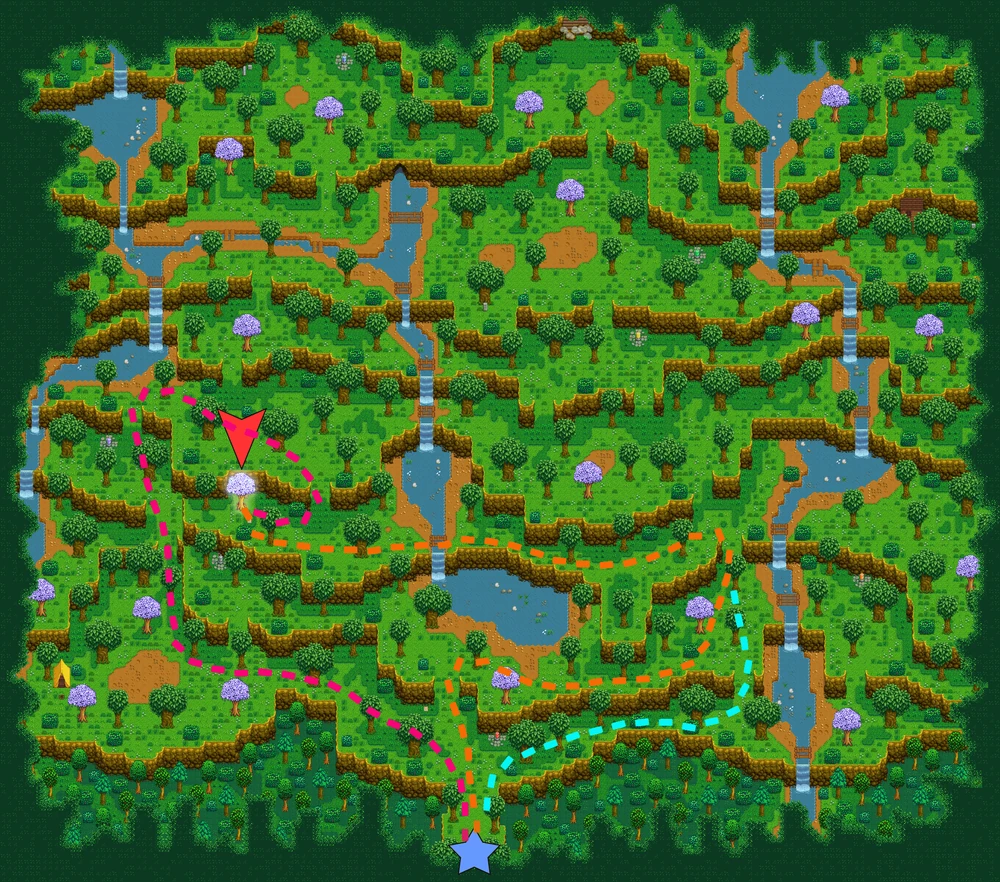
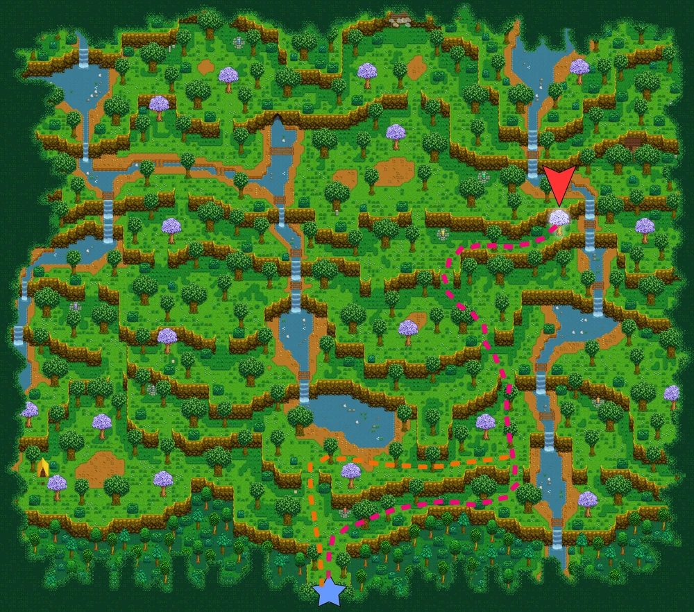
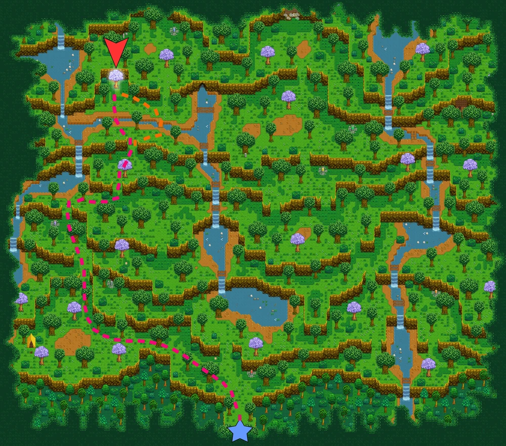

友谊瀑布

在山脊森林中寻找掩映在葱郁绿荫下的隐秘瀑布。
- 识别重点：整体环境以浓密绿色植被为主。
- 使用方式：先对照截图确认入口，再沿树荫区域推进。
这里整理山脊森林中三处与神秘之树相关的特殊任务地点，包含对应瀑布的任务描述、位置截图和跑图时的快速识别要点，方便按图找路。
三棵神秘之树分别对应三处隐秘瀑布。找路时，优先根据环境特征辨认：绿荫、粉树沙滩、黑暗包围，这样比只记路线更快。

在山脊森林中寻找掩映在葱郁绿荫下的隐秘瀑布。

在山脊森林中，寻找被粉色树木和沙滩环绕的隐秘瀑布。

在山脊森林中，寻找被黑暗包围的隐秘瀑布。